Author: Diego Alexander Rivera Acosta | Course: CSCO1040 | Date: June 2025
The goal of this investigation was to analyze a packet capture (PCAP) file using NetworkMiner and Wireshark to identify signs of malware infection. The PCAP file used is titled: 2022-06-07-Emotet-epoch5-infection-with-Cobalt-Strike-and-spambot-activity.pcap, sourced from malware-traffic-analysis.net. The objective was to reconstruct the attack, identify Indicators of Compromise (IOCs), and build a timeline of events.
| IOC | Type | Description |
|---|---|---|
| 103.98.188.50 | IP Address | Malicious HTML dropper server |
| vibesapparels.com | Domain | Delivered index[1].html |
| 173.249.25.219 | IP Address | C2 server (TLS communication) |
| 10.0.0.115 | IP Address | Infected workstation |
| 10.0.0.10 | IP Address | Fake internal DNS/LDAP server |
| JA3: a0e5fd64349b1319b7f818f1af2e | JA3 Hash | Fake Firefox update |
| Time (UTC) | Event |
|---|---|
| 14:29:14 | HTTP GET to /dQa/Qzuqq5TZO/ from 103.98.188.50 |
| 14:31:50 | DNS hijack via internal server 10.0.0.10 |
| 14:58:41 | LDAP session to 10.0.0.10 |
| 14:59:08 | Connection to 10.0.0.10:49672 |
| ~248s | TLS connection attempt to 173.249.25.219 (C2) |
Figure 1: Download de .pcap file for Network Analysis
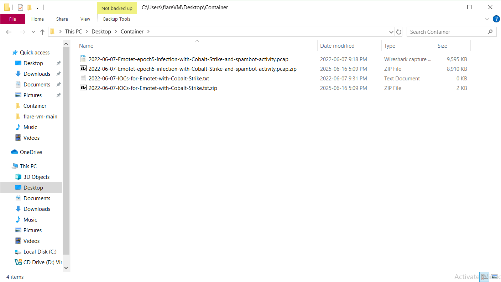Figure 2: Unzip .pcap file in a virtual machine with NAT network for safety purposes
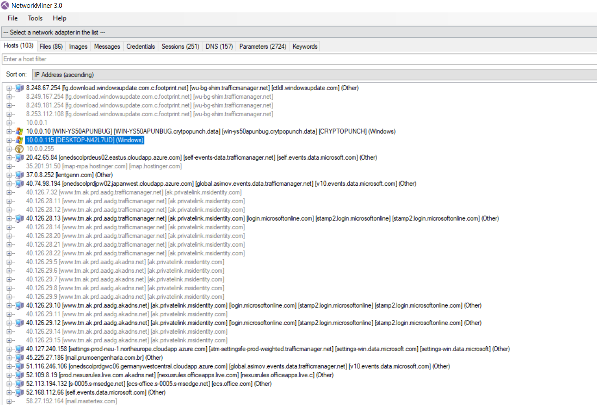Figure 3: on NetworkMiner 3.0 identify IP address of the machine infected, Which is a windows machine
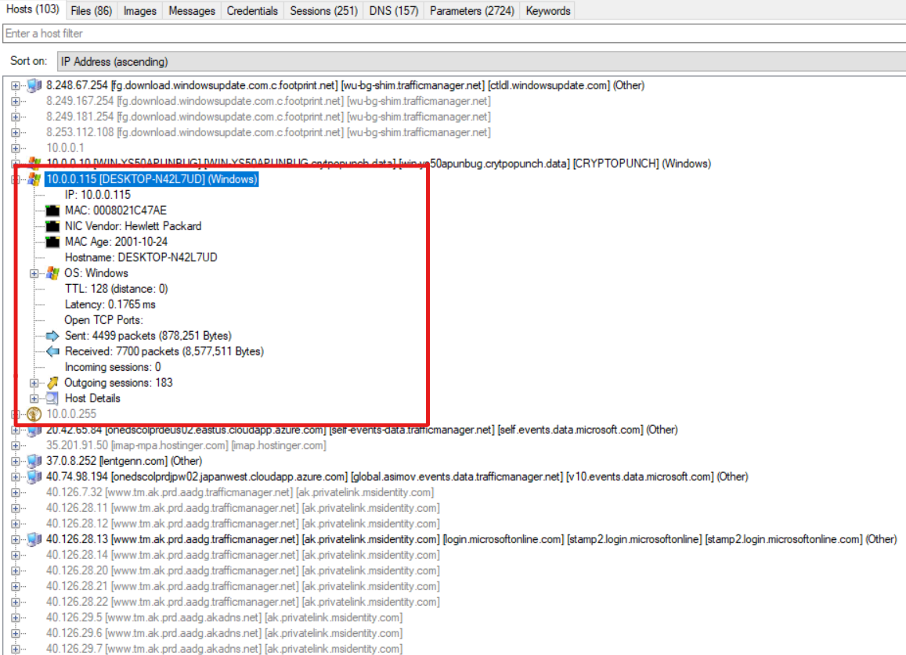Figure 4: Details of the machine compromised, such as MAC, OS version, Packets sent and received
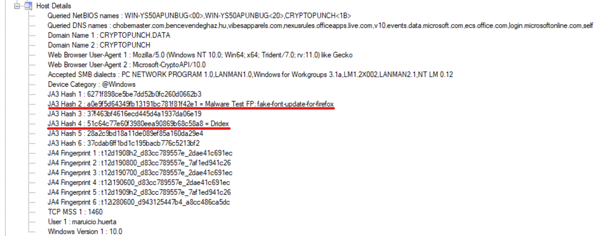Figure 5: Suspicious TLS JA3 fingerprint observed
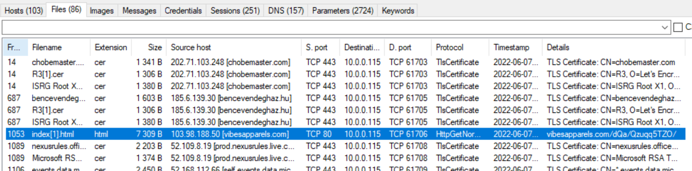Figure 6: in the Files tabs there is an index.html that is suspicious using http, IP:103.98.188.50
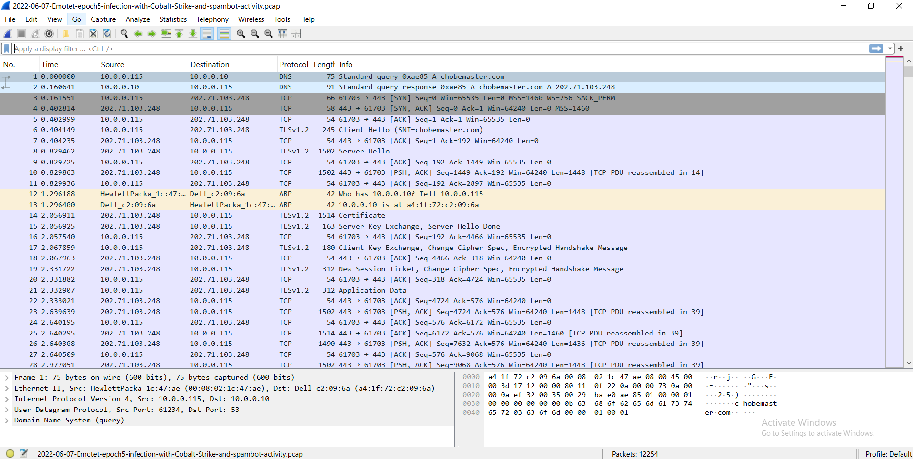Figure 7: On WireShark opening .pcap to find packets or suspicious connections
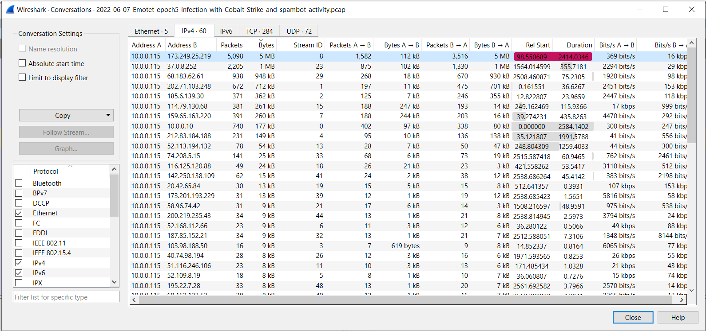Figure 8: on the conversations options there is one conection with 5mb of packets exchange from and for the infected machine to IP 173.249.25.219
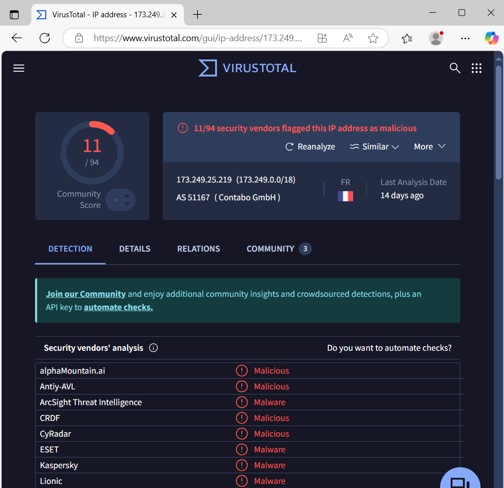Figure 9: looking for ip 173.249.25.219 on VIRUSTOTAL
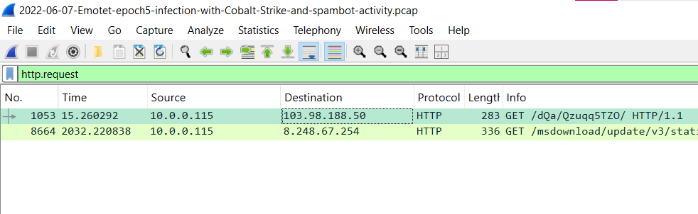Figure 10: looking for the http connection found on NetworkMiner
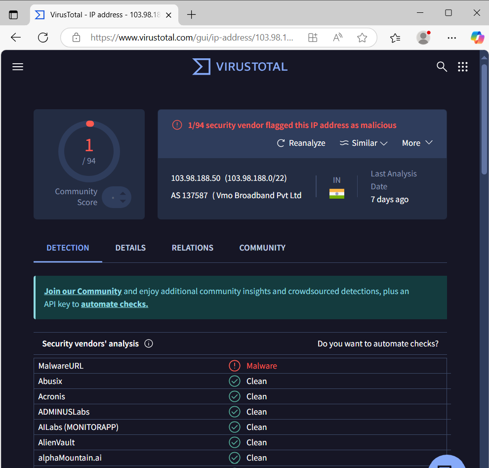Figure 11: looking for the ip 103.98.188.50 of the http request on VIRUSTOTAL
This investigation confirms that host 10.0.0.115 was infected with malware, initiating an infection chain involving a malicious HTML dropper, DNS hijacking, LDAP reconnaissance, and encrypted C2 communication. Two external IPs were confirmed malicious through VirusTotal analysis. Tools like NetworkMiner and Wireshark played critical roles in reconstructing the attack chain and identifying key indicators.
This investigation involved acquiring and analyzing a memory dump from a clean Windows 10 system to simulate a baseline forensic review using Volatility 3. The objective was to examine standard memory artifacts such as active processes, registry hives, DLLs, and network activity to understand normal system behavior.
Figure 1: WinPMEM started from command line
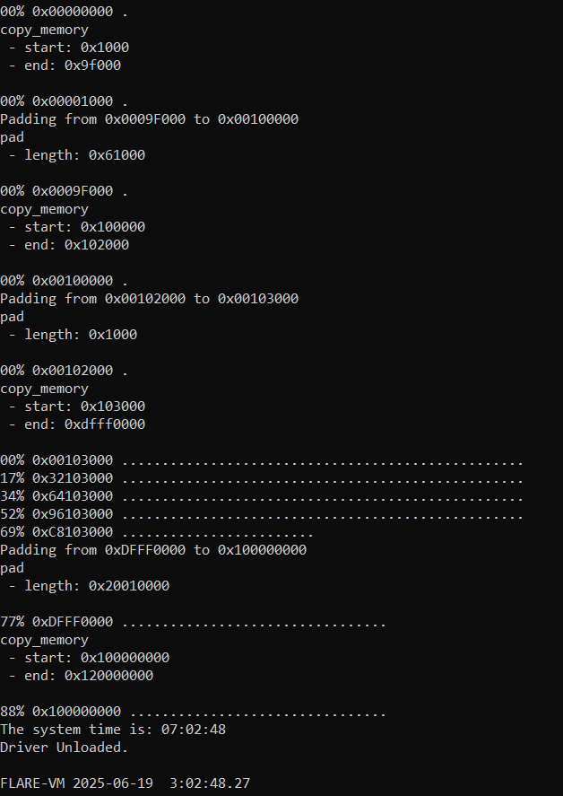Figure 2: Memory dump in progress showing memory ranges
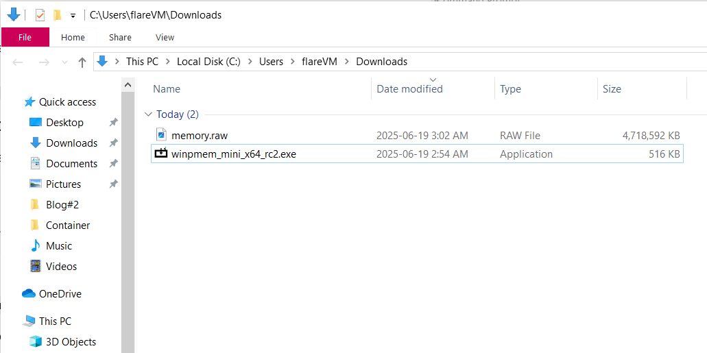Figure 3: memory.raw successfully created in Downloads
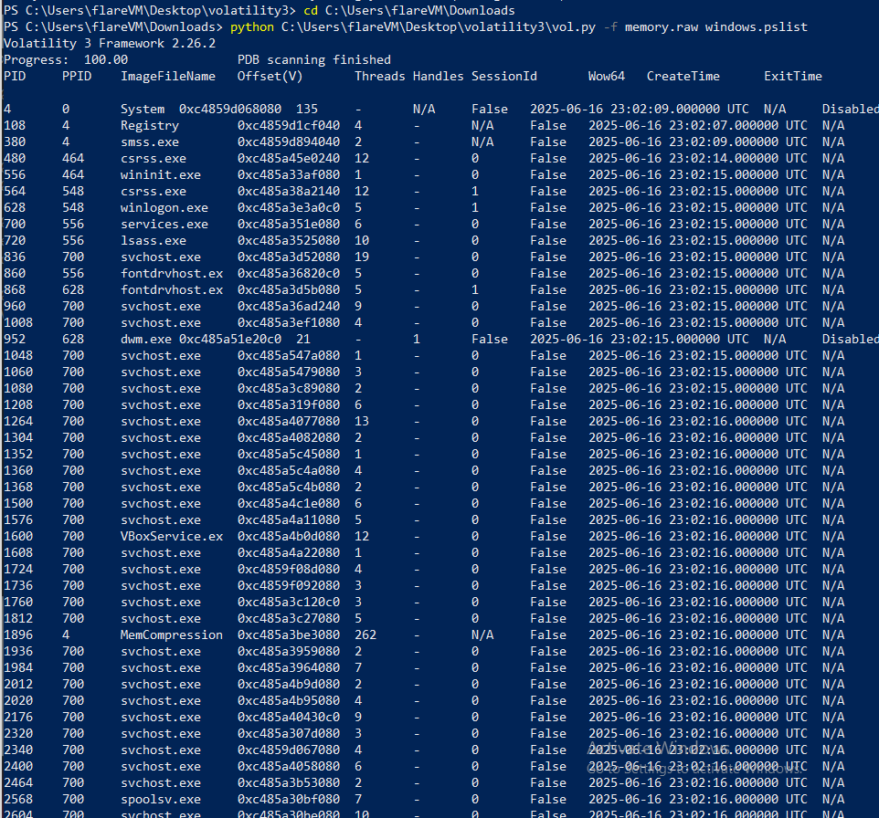Figure 4: Volatility pslist output listing active processes
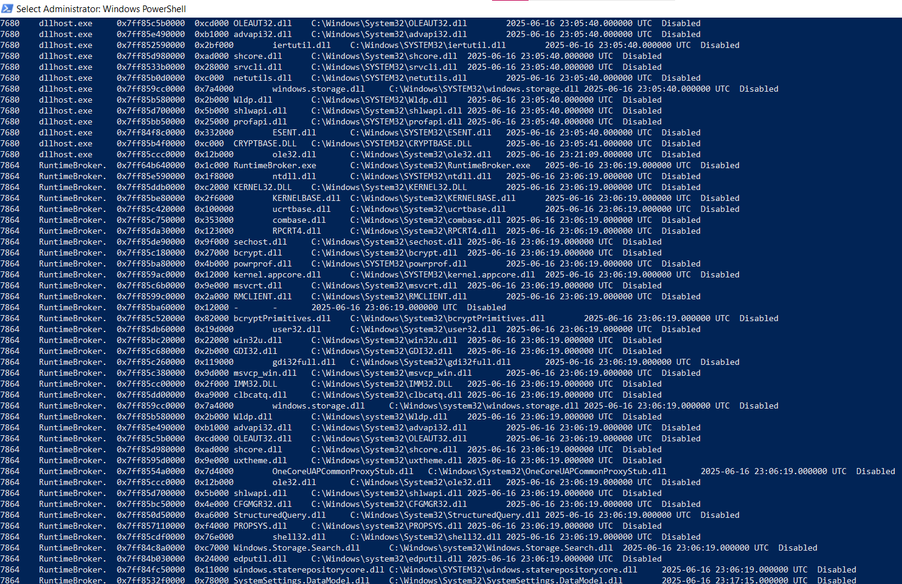Figure 5: Volatility dlllist output showing loaded DLLs
Figure 6: Volatility netscan output showing open ports and remote IPs
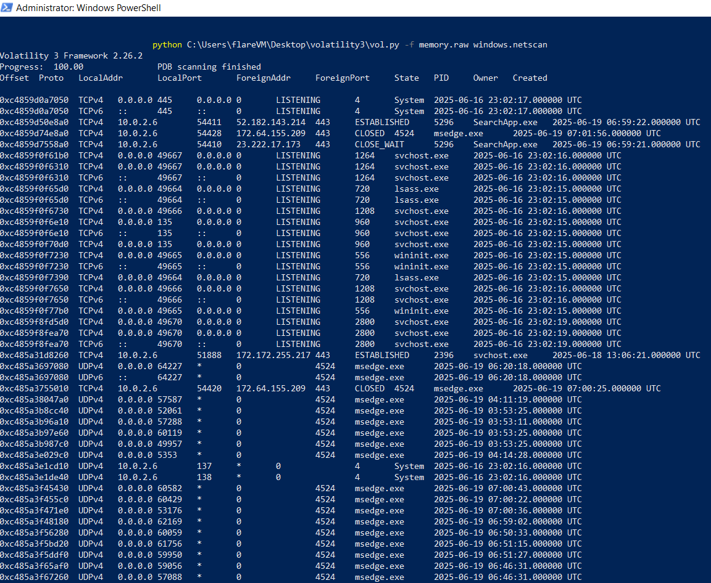Figure 7: Volatility hivelist output showing registry hives
No indicators of compromise were found. All observed behavior and system artifacts aligned with normal Windows 10 operations. There are no .vmem images of infected machines available for download
| Time (approx.) | Event |
|---|---|
| 03:00 AM | Snapshot created and WinPMEM launched |
| 03:02 AM | Memory dump completed |
| 03:10 AM | Volatility 3 analysis started |
| 03:30 AM | Artifacts extracted and screenshots taken |
This blog confirmed a baseline forensic profile of a clean Windows 10 environment. Tools like WinPMEM and Volatility 3 allowed us to validate the presence of core system processes, libraries, and expected registry structures with no indication of compromise.